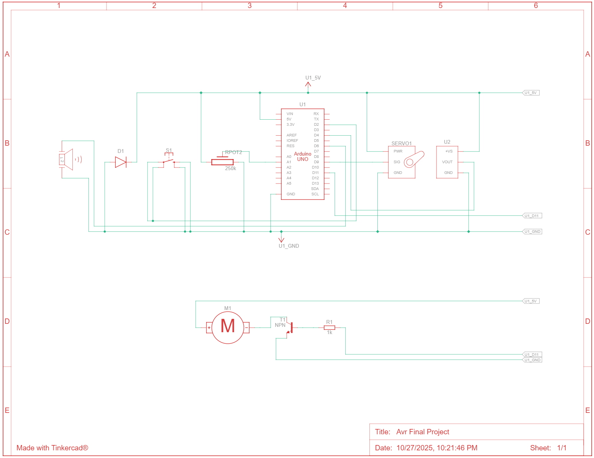
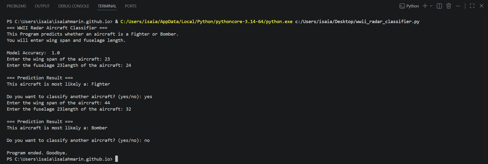

About
Practical engineering through hardware, software, and testing
I’m a Robotics and Embedded Systems graduate with hands-on experience in embedded development, industrial maintenance, automation systems, electrical integration, and rapid prototyping. My work focuses on turning technical ideas into working systems through design, wiring, coding, troubleshooting, testing, and iteration.
This portfolio highlights projects across embedded control, robotics, assistive automation, inspection systems, agricultural monitoring, and machine-learning-supported classification. Each project was selected to show practical engineering ability, system-level thinking, and experience solving real technical problems.
Projects
Featured engineering projects

Smart Temperature-Controlled Desk Fan
AVR-based embedded control system using temperature sensing, PWM fan control, servo motion, button input, buzzer feedback, and potentiometer-based manual control.

Harvest Hawk
Agricultural robotics and embedded sensing platform using ESP32-based environmental monitoring, I2C sensor integration, and field data collection.

ModuGrip
Motorized drawer-opening assist system using embedded control, custom 3D-printed hardware, actuator testing, and mechanical iteration.

Automated Page Turner
Assistive embedded prototype focused on motorized page movement, mechanical grip, timing control, and real-world prototype testing.

Pipe Viper
Compact inspection robot focused on electrical integration, constrained hardware layout, camera-based inspection, and practical robotics troubleshooting.

Python Plane Classifier
Python machine learning classifier that uses structured radar-style input data and a decision tree model to predict aircraft categories.
Experience
Industrial maintenance, automation, and real-world systems
Industrial Maintenance Technician — Carvana
Maintain and troubleshoot large-scale automated car vending machine systems across mechanical, electrical, and control-related failure points. Work includes preventive maintenance, break-fix repair, motor and chain systems, counterweight assemblies, car recovery procedures, system resets, fabrication support, and collaboration with engineering and specialist teams.
Automation / Mechanical Technician — ZF
Supported automated and mechanical production systems through troubleshooting, repair, equipment support, and hands-on technical problem solving in an industrial environment.
Maintenance Technician — CMC
Built experience with industrial equipment, mechanical systems, maintenance procedures, troubleshooting workflows, safety practices, and reliability-focused repair work.
Skills
Technical skills and tools
Contact
Let’s connect
Email: isaiahmarin.dev@gmail.com
Phone: 480-652-0701
LinkedIn: linkedin.com/in/isaiahmarin
GitHub: github.com/IsaiahMarin